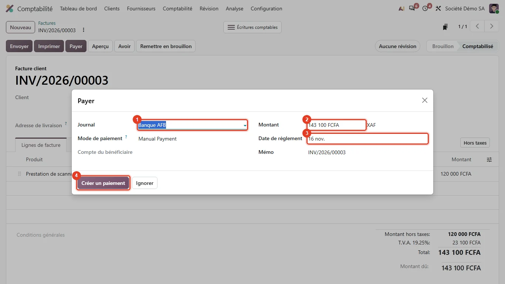

Enregistrer un encaissement bancaire
Objectif. Enregistrer un virement ou un chèque dans le journal de la banque qui l'a reçu.
Menu Odoo 15Comptabilité > Clients > Factures (Enregistrer un paiement) ou Clients > Paiements
Étapes
- Depuis la facture : Enregistrer un paiement, puis choisissez le journal de la banque concernée.
- Sans facture sous la main : Clients > Paiements > Nouveau.
- Indiquez : type Recevoir (1), client (2), montant (3), journal de banque (4).
- Cliquez sur Confirmer (5), puis lettrez le paiement avec la facture (formation 8).


À vérifier
- Le journal correspond à la banque du relevé.
- Le paiement apparaîtra au rapprochement bancaire (formation 9).
À éviter
- Ne saisissez pas le même virement deux fois (paiement + écriture manuelle).
Exercice
Enregistrez un virement de 357 750 sur la banque et contrôlez la facture.